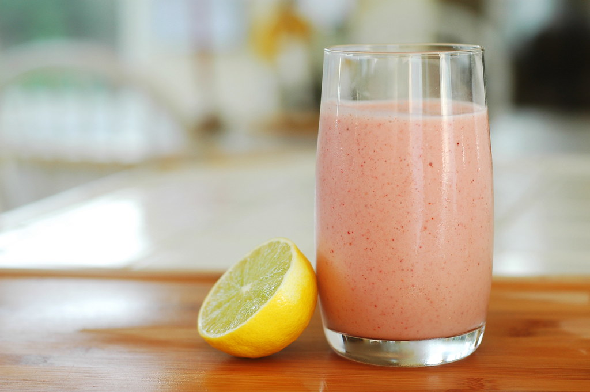

RECETA 3
«Fresas» por arantxamex está bajo la licencia CC BY-SA 2.0 |
«Vegan Buttercream Frosting» por Veganbaking.net está bajo la licencia CC BY-SA 2.0 |
Imagen de ❄️♡💛♡❄️ Julita ❄️♡💛♡❄️ en Pixabay |
 «Pimientos | 121023-0429-jikatu» por jikatu está bajo la licencia CC BY-SA 2.0 |
INGREDIENTES.
|
ELABORACIÓN.
|
 «bananas» por Fernando Stankuns está bajo la licencia CC BY-NC-SA 2.0 |
«Mangos» por Andrew E. Larsen está bajo la licencia CC BY-ND 2.0 |
«Vainilla-k2zB--620x349@abc» por ABC.es está bajo la licencia CC BY-SA 4.0 |
Imagen de Юлия Зяблова en Pixabay |
INGREDIENTES.
|
ELABORACIÓN.
|
Sitio web de las receta:Batido de fresa.Batido de mango.